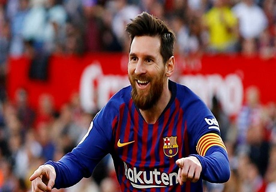

Deportes
Me gusta hacer mucho deporte, en especial me gusta el futbol, pues tengo familia que tambien le ah gustado el futbol y han llegado a jugar en grandes equipos e sus tiempos, a mi me gusta mucho pero no le dedico todo mi tiempo, porque tambie tengo otras metas que cumplir. A parte del futbol me gusta nadar, tambien me gusta correr y caminar.
